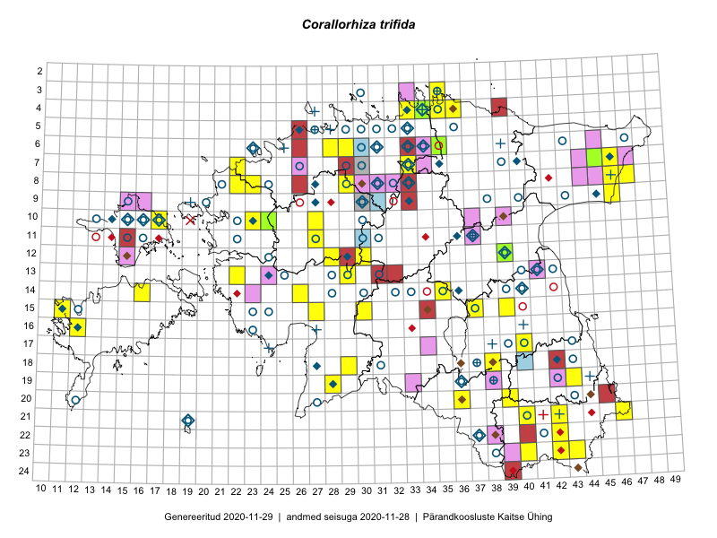

Corallorhiza trifida — kõdu-koralljuur
Kaardile koondatud taksonid: Corallorhiza trifida Châtel. (94)

Kaart põhineb 94 kirjel, neist:
vaatlusi 89
eksemplare 5
Kaasaegsed1 leiukohad asuvad 36 ruudus.
Andmed “Eesti taimede levikuatlasest”,2 sulgudes ruutude arv:3
● 1971–2005 (59)
○ 1921–1970 (56)
△ kuni 1920 (2)
+ hävinud (1)
? kaheldav (0)
Lisaruudud teistest andmebaasidest:4
ELF: 2006– . . . (7)
PKÜ: 2006– . . . (0)
ELF: 1971–2005 (10)
PKÜ: 1997–2005 (0)
| Ruut | Vaatleja(d) | Vaatlusaeg | Kirje PlutoFis |
|---|---|---|---|
| 12-28 | Tiit Hallikma, Toomas Kukk, Indrek Tammekänd | 2015-06-09 | ruut/ala: Corallorhiza trifida Châtel. |
| 12-30 | Ott Luuk, Hannes Pehlak | 2015-06-09 | ruut/ala: Corallorhiza trifida Châtel. |
| 15-11 | Mari Reitalu, Oliver Parrest | 2015-07-16 | ruut/ala: Corallorhiza trifida Châtel. |
| 13-29 | Meeli Mesipuu, Timo Luhamäe | 2015-06-10 | ruut/ala: Corallorhiza trifida Châtel. |
| 10-27 | Peedu Saar, Ott Luuk, Meeli Mesipuu, Thea Kull, Kersti Püssa, Rein Kalamees, Toomas Kukk | 2014-06-10 | ruut/ala: Corallorhiza trifida Châtel. |
| 08-29 | Thea Kull, Ott Luuk | 2016-05-30 | ruut/ala: Corallorhiza trifida Châtel. |
| 23-43 | Meeli Mesipuu, Timo Luhamäe | 2016-06-15 | ruut/ala: Corallorhiza trifida Châtel. |
| 19-43 | Sander Laherand, Ott Luuk | 2016-06-17 | ruut/ala: Corallorhiza trifida Châtel. |
| 21-42 | Sander Laherand, Ott Luuk | 2016-06-16 | ruut/ala: Corallorhiza trifida Châtel. |
| 23-40 | Sander Laherand, Ott Luuk, Susanna Vain | 2016-06-14 | ruut/ala: Corallorhiza trifida Châtel. |
| 14-26 | Maret Gerz, Liina Oja | 2016-07-08 | ruut/ala: Corallorhiza trifida Châtel. |
| 04-35 | Sander Laherand, Ott Luuk, Nele Jõessar | 2016-07-26 | ruut/ala: Corallorhiza trifida Châtel. |
| 21-46 | Timo Luhamäe, Meeli Mesipuu | 2016-06-14 | ruut/ala: Corallorhiza trifida Châtel. |
| 07-22 | Mari Reitalu, Eerik Leibak | 2016-07-07 | ruut/ala: Corallorhiza trifida Châtel. |
| 15-11 | Mari Reitalu | 2007-08-16 | ruut/ala: Corallorhiza trifida Châtel. |
| 15-11 | Mari Reitalu | 2007-06-30 | ruut/ala: Corallorhiza trifida Châtel. |
| 20-39 | Ilmar Uibopuu | 2017-06-16 | ruut/ala: Corallorhiza trifida Châtel. |
| 12-28 | Tiit Hallikma, Indrek Tammekänd, Toomas Kukk | 2015-06-09 | punkt: Corallorhiza trifida Châtel. |
| 07-46 | Toomas Kukk, Tiit Hallikma, Meeli Mesipuu | 2015-05-31 | punkt: Corallorhiza trifida Châtel. |
| 07-46 | Tiit Hallikma, Toomas Kukk, Meeli Mesipuu | 2015-05-31 | punkt: Corallorhiza trifida Châtel. |
| 15-30 | Indrek Tammekänd | 2014-06-03 | punkt: Corallorhiza trifida Châtel. |
| 10-27 | Toomas Kukk | 2014-06-10 | punkt: Corallorhiza trifida Châtel. |
| 10-27 | Toomas Kukk | 2014-06-10 | punkt: Corallorhiza trifida Châtel. |
| 13-29 | Meeli Mesipuu, Timo Luhamäe | 2015-06-10 | punkt: Corallorhiza trifida Châtel. |
| 13-29 | Meeli Mesipuu, Timo Luhamäe | 2015-06-10 | punkt: Corallorhiza trifida Châtel. |
| 13-29 | Meeli Mesipuu, Timo Luhamäe | 2015-06-10 | punkt: Corallorhiza trifida Châtel. |
| 13-29 | Meeli Mesipuu, Timo Luhamäe | 2015-06-10 | punkt: Corallorhiza trifida Châtel. |
| 13-29 | Meeli Mesipuu, Timo Luhamäe | 2015-06-10 | punkt: Corallorhiza trifida Châtel. |
| 13-29 | Meeli Mesipuu, Timo Luhamäe | 2015-06-10 | punkt: Corallorhiza trifida Châtel. |
| 13-29 | Meeli Mesipuu, Timo Luhamäe | 2015-06-10 | punkt: Corallorhiza trifida Châtel. |
| 13-29 | Meeli Mesipuu, Timo Luhamäe | 2015-06-10 | punkt: Corallorhiza trifida Châtel. |
| 13-29 | Meeli Mesipuu, Timo Luhamäe | 2015-06-10 | punkt: Corallorhiza trifida Châtel. |
| 13-29 | Timo Luhamäe, Meeli Mesipuu | 2015-06-10 | punkt: Corallorhiza trifida Châtel. |
| 13-29 | Timo Luhamäe, Meeli Mesipuu | 2015-06-10 | punkt: Corallorhiza trifida Châtel. |
| 13-29 | Timo Luhamäe, Meeli Mesipuu | 2015-06-10 | punkt: Corallorhiza trifida Châtel. |
| 15-11 | Oliver Parrest, Mari Reitalu | 2015-07-16 | punkt: Corallorhiza trifida Châtel. |
| 07-46 | Indrek Tammekänd | 2016-05-30 | punkt: Corallorhiza trifida Châtel. |
| 08-46 | Indrek Tammekänd | 2016-05-29 | punkt: Corallorhiza trifida Châtel. |
| 09-46 | Indrek Tammekänd | 2016-05-28 | punkt: Corallorhiza trifida Châtel. |
| 21-46 | Meeli Mesipuu, Timo Luhamäe | 2016-06-14 | punkt: Corallorhiza trifida Châtel. |
| 18-29 | Indrek Tammekänd, Tuuli Teppo | 2016-06-06 | punkt: Corallorhiza trifida Châtel. |
| 15-27 | Indrek Tammekänd | 2016-06-13 | punkt: Corallorhiza trifida Châtel. |
| 08-23 | Aat Sarv, Helle Mäemets | 2016-07-08 | punkt: Corallorhiza trifida Châtel. |
| 23-43 | Timo Luhamäe, Meeli Mesipuu | 2016-06-15 | punkt: Corallorhiza trifida Châtel. |
| 23-43 | Timo Luhamäe, Meeli Mesipuu | 2016-06-15 | punkt: Corallorhiza trifida Châtel. |
| 07-22 | Mari Reitalu, Triin Reitalu, Sirje Azarov | 2016-07-09 | punkt: Corallorhiza trifida Châtel. |
| 08-47 | Rein Kalamees, Kersti Püssa | 2016-06-09 | punkt: Corallorhiza trifida Châtel. |
| 08-47 | Rein Kalamees, Kersti Püssa | 2016-06-09 | punkt: Corallorhiza trifida Châtel. |
| 08-29 | Ott Luuk, Thea Kull | 2016-05-30 | punkt: Corallorhiza trifida Châtel. |
| 04-35 | Ott Luuk, Sander Laherand, Nele Jõessar | 2016-07-26 | punkt: Corallorhiza trifida Châtel. |
| 19-43 | Ott Luuk, Sander Laherand | 2016-06-17 | punkt: Corallorhiza trifida Châtel. |
| 21-42 | Ott Luuk, Sander Laherand | 2016-06-16 | punkt: Corallorhiza trifida Châtel. |
| 23-40 | Ott Luuk, Sander Laherand, Susanna Vain | 2016-06-14 | punkt: Corallorhiza trifida Châtel. |
| 15-11 | Mari Reitalu | 2007-06-30 | punkt: Corallorhiza trifida Châtel. |
| 04-33 | Ulvi Selgis, Enn Selgis | 2017-06-10 | punkt: Corallorhiza trifida Châtel. |
| 04-33 | Ulvi Selgis, Enn Selgis | 2017-06-10 | punkt: Corallorhiza trifida Châtel. |
| 17-40 | Ulvi Selgis, Enn Selgis, Ester Valdvee, Ülle Jõgar, Kai Rünk | 2017-07-02 | punkt: Corallorhiza trifida Châtel. |
| 14-35 | Meeli Mesipuu, Ott Luuk, Helen Toom | 2017-08-28 | ruut/ala: Corallorhiza trifida Châtel. |
| 15-37 | Karin Kikas, Liina Oja | 2017-08-22 | punkt: Corallorhiza trifida Châtel. |
| 14-35 | Meeli Mesipuu | 2017-08-28 | punkt: Corallorhiza trifida Châtel. |
| 14-35 | Ott Luuk | 2017-08-16 | punkt: Corallorhiza trifida Châtel. |
| 08-23 | Eerik Leibak, Mari Reitalu | 2012-07-09 | punkt: Corallorhiza trifida Châtel. |
| 08-23 | Toomas Kukk, Timo Luhamäe | 2012-07-09 | punkt: Corallorhiza trifida Châtel. |
| 08-23 | Timo Luhamäe, Peedu Saar | 2012-06-16 | punkt: Corallorhiza trifida Châtel. |
| 08-23 | Timo Luhamäe, Peedu Saar | 2012-06-16 | punkt: Corallorhiza trifida Châtel. |
| 08-23 | Timo Luhamäe, Peedu Saar | 2012-06-16 | punkt: Corallorhiza trifida Châtel. |
| 08-23 | Timo Luhamäe, Peedu Saar | 2012-06-16 | punkt: Corallorhiza trifida Châtel. |
| 08-23 | Ott Luuk, Timo Luhamäe | 2012-07-08 | punkt: Corallorhiza trifida Châtel. |
| 08-23 | Ott Luuk, Timo Luhamäe | 2012-07-08 | punkt: Corallorhiza trifida Châtel. |
| 08-22 | Triin Tanilas, Ott Luuk, Laura Kütt | 2012-07-09 | punkt: Corallorhiza trifida Châtel. |
| 08-22 | Triin Tanilas, Ott Luuk, Laura Kütt | 2012-07-09 | punkt: Corallorhiza trifida Châtel. |
| 08-22 | Triin Tanilas, Ott Luuk, Laura Kütt | 2012-07-09 | punkt: Corallorhiza trifida Châtel. |
| 08-22 | Triin Tanilas, Ott Luuk, Laura Kütt | 2012-07-09 | punkt: Corallorhiza trifida Châtel. |
| 08-22 | Triin Tanilas, Ott Luuk, Laura Kütt | 2012-07-09 | punkt: Corallorhiza trifida Châtel. |
| 08-22 | Triin Tanilas, Ott Luuk, Laura Kütt | 2012-07-09 | punkt: Corallorhiza trifida Châtel. |
| 10-23 | Thea Kull | 2012-07-06 | punkt: Corallorhiza trifida Châtel. |
| 10-24 | Thea Kull | 2012-07-09 | punkt: Corallorhiza trifida Châtel. |
| 10-24 | Peedu Saar, Timo Luhamäe | 2012-06-17 | punkt: Corallorhiza trifida Châtel. |
| 10-24 | Ott Luuk, Triin Tanilas | 2012-06-17 | punkt: Corallorhiza trifida Châtel. |
| 10-24 | Ott Luuk, Triin Tanilas | 2012-06-17 | punkt: Corallorhiza trifida Châtel. |
| 10-24 | Ott Luuk, Triin Tanilas | 2012-06-17 | punkt: Corallorhiza trifida Châtel. |
| 10-24 | Ott Luuk, Triin Tanilas | 2012-06-17 | punkt: Corallorhiza trifida Châtel. |
| 10-24 | Ott Luuk, Triin Tanilas | 2012-06-17 | punkt: Corallorhiza trifida Châtel. |
| 10-24 | Ott Luuk, Triin Tanilas | 2012-06-17 | punkt: Corallorhiza trifida Châtel. |
| 10-24 | Ott Luuk, Triin Tanilas | 2012-06-17 | punkt: Corallorhiza trifida Châtel. |
| 10-24 | Ott Luuk, Triin Tanilas, Geron Perens | 2012-06-13 | punkt: Corallorhiza trifida Châtel. |
| 11-27 | Sander Laherand | 2019-06-19 | punkt: Corallorhiza trifida Châtel. |
| 23-42 | Sirje Azarov, Jekaterina Aida, Riine Latserus, Ülle Jõgar, Hele Tulviste, Aiki Tibar | 2019-07-14 | punkt: Corallorhiza trifida Châtel. |
| 03-35 | Ott Luuk, Meeli Mesipuu | 2019-09-09 | punkt: Corallorhiza trifida Châtel. |
| 10-24 | Thea Kull | 2012-07-09 | TAA0058116: Corallorhiza trifida Châtel. |
| 12-39 | Peedu Saar, Eerik Leibak | 2015-08-16 | TAA0135377: Corallorhiza trifida Châtel. |
| 10-24 | Ott Luuk, Geron Perens, Triin Tanilas | 2012-06-13 | TAA0116700: Corallorhiza trifida Châtel. |
| 06-35 | Karin Kikas, Elle Rajandu | 2016-06-29 | TAA0141548: Corallorhiza trifida Châtel. |
| 07-45 | Rainar Kurbel | 2018-06-01 | TAA0142346: Corallorhiza trifida Châtel. |
Kaasaegsed leiukohad (tähistatud värvitud ruutudega) põhinevad peamiselt 2014–2019 välitööandmetel. Väiksemal määral on andmebaasi kantud vanemaid leiuandmeid aastatest 2006–2013.↩︎
Kukk, T., Kull, T., Eesti taimede levikuatlas. Eesti Maaülikool, Põllumajandus- ja Keskkonnainstituut, Tartu, 2005.↩︎
NB! 2005. aasta atlase andmestikus katavad uuemad leiud vanemaid. Näiteks kui liik on ruudus registreeritud 1971–2005, siis pole võimalik öelda, kas ta oli sellest ruudust teada ka enne 1970. aastat. Vana atlase andmetel hävinud ja kaheldavaid leiukohti pole hilisemate (taas)leidude põhjal korrigeeritud.↩︎
Eestimaa Looduse Fondi (ELF) ja Pärandkoosluste Kaitse Ühingu (PKÜ) andmebaasid sisaldavad inventeeritud koosluste kirjeldusi ja liigiloendeid. Neist andmekogudest on kaardile lisatud lisatud vaid need ruudud, millest uue atlase andmekogus taksoni kohta kirjeid veel pole. Kõrvale on jäetud teadaolevalt kaheldavad määrangud. Kaartidel katavad uuema perioodi andmed vanemaid, PKÜ omad ELFi omi. Kattumise tõttu võib kaardil näha olla vähem mingi kategooria ruute kui legendis olev arv näitab. ELFi ja PKÜ andmed ei kajastu hetkel vaatluste tabelis ega ruutude liigiloendites.↩︎